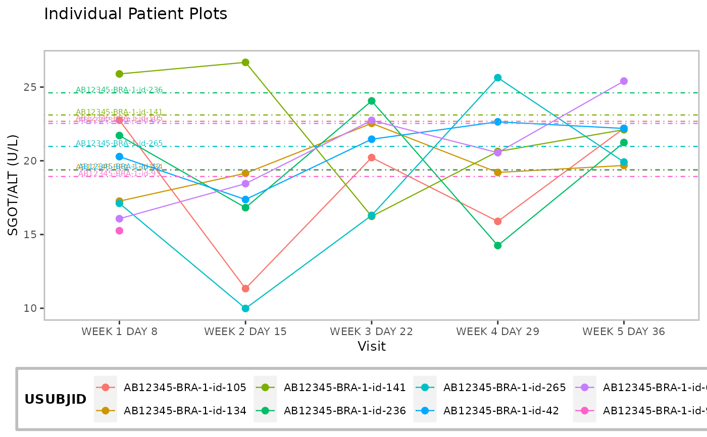
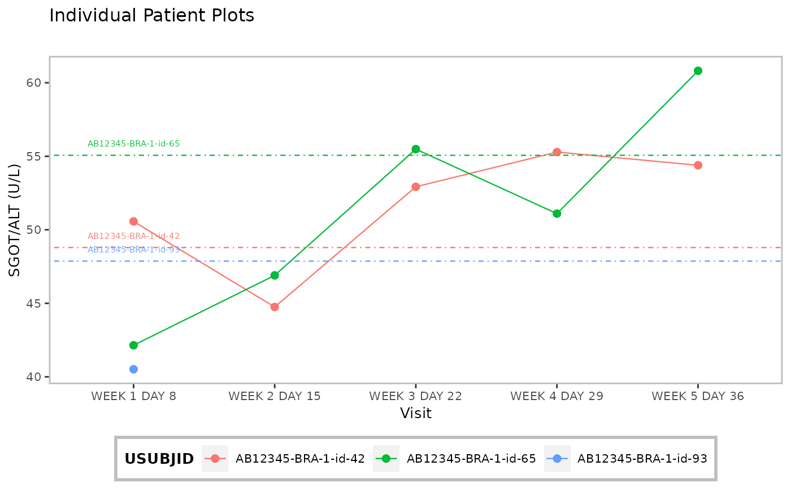

Line plot(s) displaying trend in patients' parameter values over time is rendered. Patients' individual baseline values can be added to the plot(s) as reference.
h_set_nest_theme(font_size) h_g_ipp( df, xvar, yvar, xlab, ylab, id_var, title = "Individual Patient Plots", subtitle = "", add_baseline_hline = FALSE, yvar_baseline = "BASE", ggtheme = h_set_nest_theme(10) ) g_ipp( df, xvar, yvar, xlab, ylab, id_var = "USUBJID", title = "Individual Patient Plots", subtitle = "", add_baseline_hline = FALSE, yvar_baseline = "BASE", ggtheme = h_set_nest_theme(10), plotting_choices = c("all_in_one", "split_by_max_obs", "separate_by_obs"), max_obs_per_plot = 4 )
Arguments
| font_size | ( |
|---|---|
| df | ( |
| xvar | ( |
| yvar | ( |
| xlab | ( |
| ylab | ( |
| id_var | ( |
| title | ( |
| subtitle | ( |
| add_baseline_hline | ( |
| yvar_baseline | ( |
| ggtheme | ( |
| plotting_choices | ( |
| max_obs_per_plot | ( |
Value
a ggplot object or a list of ggplots.
Functions
h_set_nest_theme: sets a ggplot graphical theme to control outlook of plot.h_g_ipp: helper function that generates a simple line plot displaying parameter trends over time.g_ipp: depending on user preference, renders a single graphic or compiles a list of graphics that show trends in individual's parameter values over time.
Examples
library(scda) library(dplyr) # Select a small sample of data to plot. adlb <- synthetic_cdisc_data("latest")$adlb %>% filter(PARAMCD == "ALT", !(AVISIT %in% c("SCREENING", "BASELINE"))) %>% slice(1:36) p <- h_g_ipp(df = adlb, xvar = "AVISIT", yvar = "AVAL", xlab = "Visit", id_var = "USUBJID", ylab = "SGOT/ALT (U/L)", add_baseline_hline = TRUE) p  plot_list <- g_ipp(df = adlb, xvar = "AVISIT", yvar = "AVAL", xlab = "Visit" , ylab = "SGOT/ALT (U/L)", title = "Individual Patient Plots", add_baseline_hline = TRUE, plotting_choices = "split_by_max_obs", max_obs_per_plot = 5) plot_list #> [[1]]#> #> [[2]]  #>